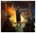

国家理念沙盒
| 1.35朝鲜的理念 |
此信息可能已落后版本，最后更新于1.35 ----
|
| -10% 建造花费 +10% 陆军士气 |
| +10% 步兵作战能力
|
|
|
{kind=link}
| 纳瓦拉的理念 |
此信息可能已落后版本，最后更新于1.34 ----
|
| +10% 士气伤害 +1 外交声誉 |
| +1 海军将领火力
|
|
|
{kind=link}
| 欧陆拓展·大一统阿拉伯的理念 |
此信息可能已落后版本，最后更新于1.34 ----
|
| -20% 造核花费 +2 正统信仰容忍度 |
| +5% 训练度
|
|
|
| 法兰西的理念 |
此信息可能已落后版本，最后更新于1.34 ----
|
| +1 外交声誉 +20% 国家人力修正 |
| -10% 发展成本
|
|
|
{kind=link}
| 革命法兰西的理念 |
此信息可能已落后版本，最后更新于1.34 ----
|
| +5 革命热情上限 -50% 严酷镇压花费 |
| +20% 围城能力
|
|
|
战争前夜国家理念
| 战争前夜高句丽的理念 |
此信息可能已落后版本，最后更新于1.31 ----
|
| +15% 国内贸易竞争力 +10% 步兵作战能力 |
| +1 炮兵火力
|
|
|
| 战争前夜中华的理念 |
此信息可能已落后版本，最后更新于1.32 ----
|
| -20% 陆军维护费修正 +15% 陆军士气 |
| +33% 国家人力修正
|
|
|
| 战争前夜天朝理念的理念 |
此信息可能已落后版本，最后更新于1.32 ----
|
| -33% 陆军维护费修正 +33% 陆军规模上限修正 |
| +20% 商品产出修正
|
|
|
| 战争前夜西夏的理念 |
此信息可能已落后版本，最后更新于1.31 ----
|
| +2 异教容忍度 -20% 严酷镇压花费 |
| -15% 省份战争分数花费
|
|
|
| 战争前夜奥地利的理念 |
此信息可能已落后版本，最后更新于1.31 ----
|
| +5% 训练度 +10% 陆军士气 |
| +20% 商品产出修正
|
|
|
| 战争前夜匈牙利的理念 |
此信息可能已落后版本，最后更新于1.31 ----
|
| +20% 骑兵作战能力 +15% 正统信仰省份提供的人力 |
| +1 免维护点数将领
|
|
|
| 战争前夜奥地利-匈牙利的理念 |
此信息可能已落后版本，最后更新于1.31 ----
|
| +5% 训练度 +10% 陆军士气 |
| +20% 商品产出修正
|
|
|
| 战争前夜斯堪的纳维亚的理念 |
此信息可能已落后版本，最后更新于1.31 ----注释
斯堪的纳维亚仅能由 |
| +20% 全国人力 +10% 步兵作战能力 |
| +25% 人力恢复速度
|
|
|
| 战争前夜塞尔柱的理念 |
此信息可能已落后版本，最后更新于1.31 ----
|
| -20% 陆军维护费 +5% 训练度 |
| -15% 造核花费
|
|
|
| 战争前夜高卢的理念 |
此信息可能已落后版本，最后更新于1.32 ----注释
高卢仅能由 |
| +15% 行政容量 +25% 海军规模上限修正 |
| +15% 人力恢复速度
|
|
|
| 战争前夜哥特的理念 |
此信息可能已落后版本，最后更新于1.33 ----注释
哥特仅能由 |
| +15% 人力恢复速度 +1 敌军损耗 |
| 成长期：+5% 行政效率
完全体：+10% 行政效率 |
|
|
| 斯堪的纳维亚的理念 |
此信息可能已落后版本，最后更新于1.33 ----注释
1.34版本 |
| +5% 训练度 +10% 船只耐久度 |
| +33% 人力恢复速度
|
|
|
| 波兰立陶宛联邦的理念 |
此信息可能已落后版本，最后更新于1.33 ----注释
1.34版本
|
| +10% 贵族阶层忠诚度 +2 可接受的文化 |
| +25% 月度改革进度修正
|
|
|
| 波兰立陶宛联邦的理念 |
此信息可能已落后版本，最后更新于1.33 ----注释
1.34版本
|
| +25% 全国人力修正 +3 异端容忍 |
| +15% 行政容量修正
|
|
|
女仆之国政策
 行政点数
行政点数
 外交点数
外交点数
 军事点数
军事点数
外交
|
间谍
|
探索
|
影响
|
航海
|
贸易
|
八卦
| ||||||||||
行政
|
+1 −15% |
−0.1% +20% |
+10 +5% |
−20% |
+1 |
+20% |
+1 +1 +1 +1 +1 −1 |
−0.1 +20% |
+20% +5% |
+10% +15% |
−10% −10% |
−20% −5% |
+50% |
+10% +10% |
+15% +15% |
−5% +15% |
经济
|
+15% −0.05 |
+50% +1 |
+25% |
+25% +100% |
+25% +5% |
+10% +10% |
+10% −10% |
−1 −10% |
-5% -5 |
+33% +1 |
+5% -15% |
+10% +10% |
+10% |
+10% +0.2 |
+5% |
+10% −10% |
扩张
|
+10% +1 |
−0.05 +20% |
+20 −50% |
+25% +10% |
+33% |
+10% +20% |
−15% |
−10% +5% |
+1% -15% |
+0.5 +10% |
-15% |
−20% −20% |
+5% |
+10% +10% |
+1 |
+10% +10 |
人文
|
+1 +20% |
+25% −1 |
+10 +50% |
+1 +1 |
+10% −33% |
−10% +20% |
+10% +20% |
−25% −0.05 |
+2 +2 |
−2 +0.5 |
+25% +10% |
+5% +5% |
−1 −5 |
+1 +10% |
+0.5 −1% |
+1 |
革新
|
−10% +1 |
−25% +1 |
+5% +10% |
−10% −10% |
+1 +10% |
−0.25 +10% |
+20% |
+10% −10% |
+5% −20% |
-5% -5% |
−5% +20% |
+5% +1 |
+10% +1 |
+0.5 −10% |
+10% |
−20% +10% |
宗教
|
+20% +1% |
+1% +20% |
+10% −10% |
−20% |
+10% +5% |
+10% +1% |
−1 +1% |
−1 +1 |
+5% +5% |
-5 +1% |
+1 +1 |
−10% +1 |
+20% +3% |
+2 −50% |
+5% +10% |
+10% +5% |
贵族
|
+1 +1 |
+10% |
+33% |
−1 +100% |
−1% |
+30% +1 | ||||||||||
防御
|
+1 +1 |
+10% −0.1 |
+20% +10% |
−0.03 +10% |
−10% +15% |
+25% +1 | ||||||||||
神权
|
+1 +15% +1 +0.5 +0.5 +0.5 +0.1 +1 |
+20% |
+15% +5% |
−10% +1% |
+50% +50% |
+15% +15% | ||||||||||
游牧
|
+10% +10% |
+50% +10% |
+5% −50% |
+5% +100% |
+10% +1 |
-20% +10% | ||||||||||
 原住民
|
+1 +15% |
+10% −10% |
+2.5% +10% |
+1 −15% |
+25% |
+15% +25% | ||||||||||
海军
|
+33% |
+1 +10% |
+20% |
+33% +1 |
+50% +50% |
+40% −10% | ||||||||||
进攻
|
+50% +1 |
+10% +1 |
+50% +5% |
−20% +1 |
+1 +5% |
+10% +10% | ||||||||||
财阀
|
−10% +1 +1 +1 +1 +25% |
+33% |
+20% +10 |
+100% −10% |
−15% +15% |
+1 −10% | ||||||||||
质量
|
+1 −0.05 |
−0.5% |
+10% −25% |
+25% +10% |
+20% |
+20% | ||||||||||
数量
|
+1 +10% |
+25% −15% |
+10% +1 |
+1 +10% |
−15% +15% |
+20% |